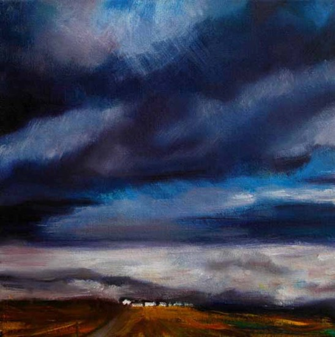

John O'Grady is a Dublin born artist who divides his time between Ireland and Provence.
Several themes reoccur in his landscape work of Ireland such as open land, lanes dappled
with light, bogs, gorse and a sense of the magical.
He captures the emotional quality of a place (whether real or imagined) with astonishing clarity and sensitivity; each piece has a palpable atmosphere and a sense of immediacy and even poignancy. There is a feeling of life being arrested in that moment, as well as a quality of timelessness.
He captures the emotional quality of a place (whether real or imagined) with astonishing clarity and sensitivity; each piece has a palpable atmosphere and a sense of immediacy and even poignancy. There is a feeling of life being arrested in that moment, as well as a quality of timelessness.

Evening West of Ireland
Oil on Canvas
Guide Price: €1,950